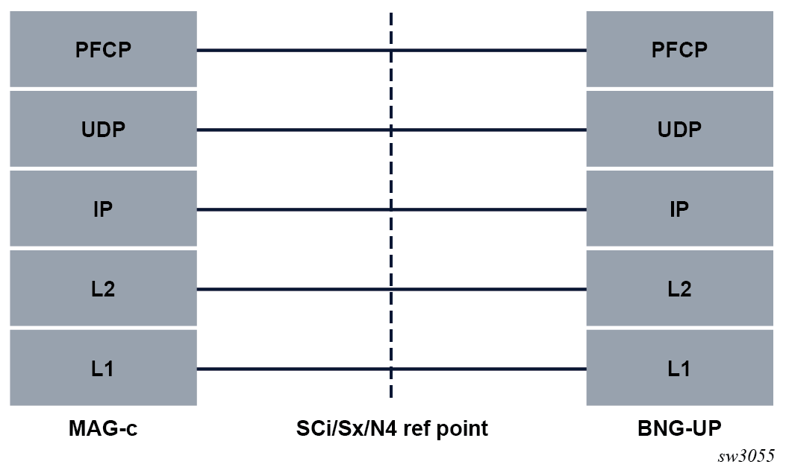
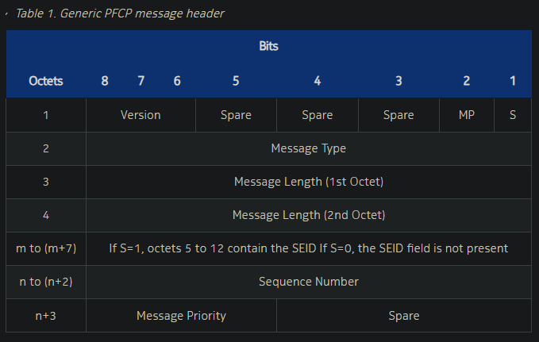
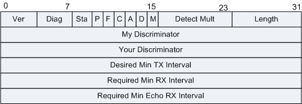
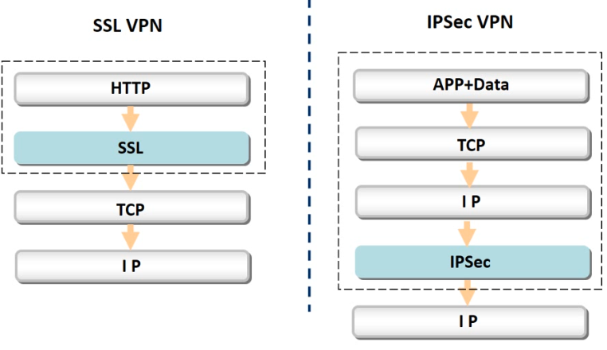

协议安全 Protocol Security
一般来说，协议规范正式确定后，都不会轻易修改。因此相较于其它方向的安全研究者需要不断学习新技术，协议安全研究者更关注协议的底层实现原理和应用。当然，要研究协议安全，一般也离不开流量分析。
OSI不同协议的层级
- 传输层协议：TCP协议、UDP协议。
- 网络层协议：IP协议、ICMP协议、ARP协议、RARP协议、OSPF（有争议，参考的以考研大纲为准）。
- 应用层协议：FTP、Telnet、SMTP、HTTP、BGP、RIP、NFS、DNS。
其它协议分类
- 路由协议(RIP/EIGRP/OSPF/ISIS/BGP)
- 交换协议(TRUNK/VTP/STP/HSRP)
- 工控协议（Modbus、S7等），因为比较特殊，相关信息记录到工控安全笔记中
- SMB（Server Message Block），服务器消息块协议
PS： - BGP（Border Gateway Protocol，边界网关协议）和RIP（Routing Information Protocol，路由信息协议）是应用层协议，虽然它们是路由协议，用来影响网络层的，但它们工作在应用层。） - RIP基于UDP，OSPF基于IP，BGP基于TCP - OSPF用IP（RIP用到网络层），所以OSPF是传输层协议； 但也有不同说法，如在考研考纲中：OSPF协议是不使用UDP数据报传送，而是直接使用IP数据报传送，因此OSPF是被划分到属于网络层协议）；
3GPP知识
3GPP 知识：
3GPP 技术文档，技术报告 (TR) 或者技术规范 (TS)。规范号码后面是版本 Vx.y.z，其中 x 表示 release，y 表示技术版本，z 表示修订版本。
每个 release 都有一个冻结日期，一般 3GPP 协议在冻结以后就不再修改。一般冻结日期为 1 年。
Reference 3GPP TS 29.513 V15.5.0 （2019-09）
Title 3rd Generation Partnership Project;Technical Specification Group Core Network and Terminals;5G System; Policy and Charging Control signalling flows and QoS parameter mapping;Stage 3(Release 15)
文档中有 Stage 1,2,3之分。
- Stage 1 规范了从服务使用者的角度阐述的一个服务；
- Stage 2 规范描述了对需要解决的问题的逻辑分析；
- Stage 3就是技术实现。
3GPP规范 http://www.3gpp.org 获得
5G相关的协议见笔记
学习推荐
当然，默认是推荐先看RFC，再看其它资料。
- CS考研中推荐的计算机网络教材。
- 科来网络在小破站发的视频公开课
- 3gpp标准文档
常见的协议介绍
IP,ARP,DHCP,DNS等常见协议网上可查，也可参考相关书籍。
不常见协议介绍
RESP
全称 REdis Serialization Protocol （没错是大写E），是Redis的客户端和服务端之间采取了一种独立名的协议。
优点：容易实现，解析快，人类可读。
注意：RESP 虽然是为 Redis 设计的，但是同样也可以用于其他 C/S 的软件。
RESP 主要可以序列化以下几种类型：整数，单行回复(简单字符串)，数组，错误信息，多行字符串。
其中内容可能包含有用的信息。
单行回复：回复的第一个字节是 "+"
错误信息：回复的第一个字节是 "-"
整形数字：回复的第一个字节是 ":"
多行字符串：回复的第一个字节是 "$"
数组：回复的第一个字节是 "*"
ref：
PFCP
全称 Packet Forwarding Control Protocol，报文转发控制协议。顾名思义，是对“数据转发”（Packet Forwarding）进行“控制”（Control）的协议。PFCP是CUPS（Control and User Plane Separation，“控制面”和“用户面”分离，简称CU分离）的副产物 —— 在EPC早期版本中，SGW和PGW在“控制面”（Control Plane）参与“会话管理”（Session Management），也在“用户面”（User Plane）参与“数据转发”（Packet Forwarding），对“数据转发”的“控制”属于SGW或PGW内部实现（网元可视为黑盒子），不需要通过协议约束；在5GC中，“控制面”（C）和“用户面”（U）分离，“会话管理”和“数据转发”分别由SMF和UPF负责（对运营商来说，理想情况是SMF和UPF完全解耦，实际情况是SMF和UPF依然在使用同一厂家产品），凭空多出一个N4接口，相对应的，3GPP需要设计一个控制协议，就是PFCP。
scapy已支持pfcp的解包和封包，比较方便。
3GPP TS 29.244 中定义的 PFCP 协议，以及 BBF TR-459 中定义的 BNG 特定扩展。
PFCP 通常是会话管理的核心。 PFCP 协议运行在 UDP/IP 之上。 请求消息的 UDP 目的端口为8805，这是 PFCP 协议的注册端口号。
PS: wireshark过滤端口语法 udp.dstport == 8805
ref: - https://github.com/801room/upf_p4_poc - PFCP协议及格式详解
关于pfcp的解析
1.Python语言 scapy或者自己写解包逻辑。 实测scapy解包很迅速。
2.Go语言
go-pfcp -- PFCP implementation in Golang.This project use go-pfcp to decode/code pfcp message.
控制面的PFCP协议栈

The maximum supported PFCP message size is 8192 bytes. If the PFCP link MTU size is limited to 1500 bytes, Nokia recommends enabling IP address reassembly.
Generic PFCP message header
PFCP的通用消息头：

https://www.bilibili.com/video/BV1Ke411y7gY
ref: - PFCP protocol - Message Format
BFD
BFD（Bidirectional Forwarding Detection，双向转发检测）是一种基于RFC 5880标准的高速故障检测机制，两个系统建立BFD会话后，在它们之间的通道上周期性地发送BFD报文，如果一方在协商的检测时间内没有接收到BFD报文，则认为这条双向通道上发生了故障。上层协议通过BFD感知到链路故障后可以及时采取措施，进行故障恢复。
ref： https://info.support.huawei.com/info-finder/encyclopedia/zh/BFD.html https://www.h3c.com/cn/d_200804/603261_30003_0.htm
- BFD控制报文格式 - 很详细
- BFD协议解析及C/C++代码实现
BFD Control报文结构
- BFD控制报文封装在UDP报文中传送，对于单跳检测其UDP目的端口号为3784，对于多跳检测其UDP目的端口号为4784或3784。
- BFD控制报文根据场景不同封装不同, BFD控制报文包括两部分：强制部分和可选的认证字段。不同的认证类型，认证字段的格式不同。
- BFD检测时通过维护在两个系统之间建立的BFD会话来实现的，系统通过发送BFD报文建立会话。

CBSP协议
Cell Broadcast Service Protocol，是一个用于移动通信网络中的小区广播服务（Cell Broadcast Service, CBS）的协议。CBS是一种无线通信服务，允许文本或二进制消息广播到所有在一个特定移动电话小区内的移动设备，而不是发送给特定的电话。这种服务非常适合在紧急情况下向公众发送警报和通知。
CBSP 消息的 TCP 目标端口号是 48049/tcp。 它是 3GPP 小区广播服务协议 CBSP (3gpp cbsp) 的注册端口号。
每当建立新的 TCP 连接时，两个实体（BSC 或 CBC）都应使用 3gpp-cbsp 目标端口号 48049/tcp。 当它在现有 TCP 连接上发送 CBSP 消息时，发送实体（BSC 或 CBC）应使用 48049/tcp（如果它是该 TCP 连接的发起者）作为 TCP 目标端口号，或者使用从 发起此现有 TCP 连接的对等实体。 IP BSC/CBC 节点应支持 IPv4。 IPv6 的支持是可选的。 建议在传输网络中从 IPv4 到 IPv6 的潜在过渡期间支持 IP 双栈。
CBSP的主要特点和用途包括： 群发消息：能够向一个特定区域内的所有用户同时发送一条消息。 广泛应用于公共安全：在紧急情况下，例如自然灾害（地震、洪水）、恐怖袭击或其他重大公共事件时，政府和紧急服务机构可以通过CBS向公众发送紧急通知和预警。 不依赖于用户订阅：与个人订阅的短信服务不同，CBS消息对所有用户是开放的，无需用户主动订阅服务即可接收消息。 网络效率：使用CBS，网络可以有效地利用资源，对特定区域内的所有手机用户群发相同的消息。 隐私性：由于消息是广播的，服务提供商无法追踪谁接收了消息。 CBSP定义了移动通信网络小区广播数据的发送和控制机制，由移动网运营商根据国家法律法规和标准操作流程进行管理。随着网络技术发展，比如现在的4G和即将全球铺开的5G网络，CBSP及其相关服务可能在实现方法上有所变化，但它的基本原理和目的保持不变。 目前，CBSP不象其他网络协议那样有一个特定的RFC文档，但是它的实现和行为可在各个国家的移动通信行业及其规范文献中找到具体内容，同时，国际电信联盟（ITU）和3GPP等组织的标准文档中也包含了CBS相关的技术规范。
RFC参考：
CBSP 消息的 TCP 目标端口号是 48049/tcp。 它是 3GPP 小区广播服务协议 CBSP (3gpp cbsp) 的注册端口号。
每当建立新的 TCP 连接时，两个实体（BSC 或 CBC）都应使用 3gpp-cbsp 目标端口号 48049/tcp。 当它在现有 TCP 连接上发送 CBSP 消息时，发送实体（BSC 或 CBC）应使用 48049/tcp（如果它是该 TCP 连接的发起者）作为 TCP 目标端口号，或者使用从 发起此现有 TCP 连接的对等实体。 IP BSC/CBC 节点应支持 IPv4。 IPv6 的支持是可选的。
建议在传输网络中从 IPv4 到 IPv6 的潜在过渡期间支持 IP 双栈。
FGFM
FGFM - FGFM - FortiGate to FortiManager Protocol, 专为 FortiGate 和 FortiManager 部署场景而设计，尤其是使用 NAT 的情况。 这些场景包括 FortiManager 位于公共互联网上，而 FortiGate 设备位于 NAT 后面，FortiGate 设备位于公共互联网上，而 FortiManager 位于 NAT 后面，或者 FortiManager 和 FortiGate 设备都具有可路由的 IP 地址。
FortiManager 设备的设备管理器使用 FGFM 创建新设备组、配置和添加设备以及安装策略包和设备设置。
端口 541 是内部管理网络上用于 FortiManager 流量的默认端口。 端口 542 还用于建立 IPv6 连接。
Tacscs
终端访问控制器控制系统TACACS（Terminal Access Controller Access-Control System），用于与UNIX网络中的身份验证服务器进行通信、决定用户是否有权限访问网络。各厂商在TACACS协议的基础上进行了扩展，例如思科公司开发的TACACS+和华为公司开发的HWTACACS。TACACS+和HWTACACS均为私有协议，在发展过程中逐步替代了原来的TACACS协议，并且不再兼容TACACS协议。
IKE协议

学习笔记
MMTLS
LLDP
LLDP（Link Layer Discovery Protocol，链路层发现协议）提供了一种标准的链路层发现方式，可以将本端设备的的主要能力、管理地址、设备标识、接口标识等信息组织成不同的TLV（Type/Length/Value），并封装在LLDPDU（Link Layer Discovery Protocol Data Unit，链路层发现协议数据单元）中发布给与自己直连的邻居，邻居收到这些信息后将其以标准MIB（Management Information Base，管理信息库）的形式保存起来，以供网络管理系统查询及判断链路的通信状况。
ref： https://protocol.aymar.cn/cd_feature_lldp_message_format.html
from AI
LLDP（Link Layer Discovery Protocol）是一个开放的网络协议，由IEEE 802.1AB标准定义。它允许网络设备在数据链路层发现其他设备，并收集它们的配置信息，如设备标识、能力和邻近设备之间的连接点。 LLDP的关键特性包括：
设备发现：帮助网络管理软件发现局域网中的设备及其连接方式。
相邻发现：提供设备之间的直接连接信息，使得网络拓扑的自动化发现成为可能。
多厂商支持：作为一个开放标准，多个网络设备厂商都支持LLDP。
易于管理：LLDP交换的信息可以由网络管理员用于管理和故障排除。
扩展性：协议允许通过TLVs（Type-Length-Value）进行扩展，这样厂商可以添加自定义信息。
使用LLDP，网络设备，如交换机、路由器、电话和工作站，能夜定期广播自己的身份信息，同时也可以接收邻居设备的广播。这样，它们能够学习到网络拓扑以及其他设备的类型和配置。LLDP是一种非常有用的协议，特别是在大型或动态变化的网络环境中，它有助于简化网络设备的发现与映射过程。
DNS
DNS协议缺陷：在网络中明文传输 可以加密传输解决明文传输问题，但缺点是速度慢。
-
域名 Domain Name: 又称网域，是由一串用点分隔的名字组成的Internet上某一台计算机或计算机组的名称，用于在数据传输时对计算机的定位标识（有时也指地理位置）。
-
网域名称系统 DNS 即 Domain Name System：是因特网的一项核心服务，它作为可将域名和IP地址相互映射的一个分布式数据库，能使人更方便地访问互联网，而不用去记住能够被机器直接读取的IP地址数串。
-
域名服务主要是基于UDP实现，服务器的端口号为 53 。
Passive DNS
被动DNS是什么？
被动DNS是Florian Weimer在2004年提出并发明的一项技术，与DNS查询的方式相反，被动DNS属于反向获取或查询DNS数据信息。
被动DNS，将全球域名系统中可用的DNS数据信息（包括）重建到中央数据库中，以便研究人员对其进行检索和查询。这些数据信息是从生产网络中获取到的，不仅包含了当前的DNS数据，也包括了历史记录中的一些DNS数据映射。
被动DNS的应用场景有哪些？
发明被动DNS技术的初衷，是为了防止网络攻击，事实上，它的确在这方面起到了突出的作用。除此之外，它还被用在其他的应用场景中，例如：
- 检测网站钓鱼域名
- 阻断垃圾邮件干扰
- 识别恶意域名
- 提供威胁情报
- 检测域名劫持
- 品牌保护
- 域名DNS历史记录查询
- 查询主域名下的所有子域名
被动DNS如何工作？
被动DNS基于被动观察的DNS查询和响应。例如，一个互联网用户可能会查询到www.popeyes.com，这是美国一家颇受欢迎的炸鸡餐厅的网站。根据查询发生的位置，被动DNS传感器可以收集到该DNS查询的相关信息，并收集到主机名解析的IP地址，例如13.52.38.70。
将该信息添加到DNSDB后，DNSDB用户可以在DNSDB中搜索该名称，从而了解该名称解析为哪个IP地址；用户还可以查询IP地址并收集指向该IP的域名。

FTP
FTP是明文协议，可以用过Wireshark抓包来捕获登录用户名和密码。

-
如果配置的是匿名访问，在windows上访问其实不需要填写用户名和密码；
-
如果通过命令行工具登陆时要求填写，则用户填写anonymous，密码可以随便填或者不填。
ARP
ARP：Address Resolution Protocol，地址解析协议。是一个位于TCP/IP协议栈中的网络层，负责将某个IP地址解析成对应的MAC地址。
ref: APR攻击
RARP
RARP：Reverse Address Resolution Protocol，反向地址转换协议。允许局域网的物理机器从网关服务器的 ARP 表或者缓存上请求其 IP 地址。
REF
- Python3教程：struct模块的详细用法
- Linux C/C++服务器开发实践